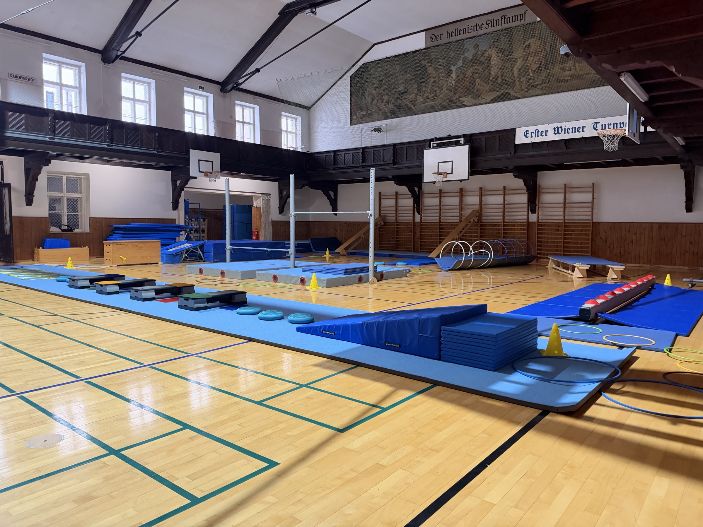

Moderner Turnbetrieb
Klare Gruppen, verlässliche Betreuung und Training mit Blick auf Technik, Freude und Entwicklung.

Turnen in Wien seit Generationen
Bewegung, Technik und Gemeinschaft in einem modernen Trainingsumfeld. Kinder- und Jugendgruppen sind derzeit voll, Anfragen bleiben möglich.
Klare Gruppen, verlässliche Betreuung und Training mit Blick auf Technik, Freude und Entwicklung.
Ein ruhiger, kraftvoller Grünton prägt den neuen Auftritt: sportlich, frisch und wiedererkennbar.
Einfache Anmeldung per Mail, faire Vormerkung nach Alter und Gruppe – und rasche Rückmeldung, sobald ein Platz frei wird.
Programm 2026/27
Von spielerischer Bewegung über Gerätturnen bis zu Fitness und Gymnastik: Entdecken Sie unser Programm!
Spielerisch Bewegung entdecken: Mit einfachen Übungen fördern wir Koordination, Gleichgewicht und Rhythmus und vermitteln erste Turngrundlagen.
Montag16:10–17:10 Uhr
Aktuell ausgebucht – Aufnahme auf die Warteliste möglich.
Warteliste anfragenMit abwechslungsreichen Übungen festigen wir die Turngrundlagen und fördern Kraft, Beweglichkeit und Koordination. Der Spaß an der Bewegung steht dabei im Mittelpunkt.
Montag17:20–18:50 Uhr
Aktuell ausgebucht – Aufnahme auf die Warteliste möglich.
Warteliste anfragenWir vertiefen die Turntechnik, trainieren Kraft und Beweglichkeit und erarbeiten neue Elemente. Dabei fördern wir das selbstständige Üben und die Freude am gemeinsamen Training.
Mittwoch17:00–18:30 Uhr
Aktuell ausgebucht – Aufnahme auf die Warteliste möglich.
Warteliste anfragenGezieltes Training zur Vorbereitung auf Wettkämpfe. Wir verfeinern die Technik und erarbeiten Übungen an den Geräten.
Freitag16:30–18:30 Uhr
Teilnahme nach Absprache mit dem Trainerteam, abhängig vom Trainingsstand und der passenden Gruppe.
Ob Sie neue Elemente ausprobieren, an Ihrer Technik feilen oder einfach in Bewegung bleiben möchten: Beim freien Training an den Geräten gestalten Sie Ihr Training nach Ihren eigenen Zielen und in Ihrem Tempo. Trainerinnen und Trainer sind vor Ort und unterstützen Sie mit Tipps und Hilfestellung.
Mittwoch18:30–20:00 Uhr
Freitag18:30–20:00 Uhr
Freie Plätze verfügbar – bei Interesse direkt anfragen.
Training anfragenEin vielseitiges Training mit dem eigenen Körpergewicht, TRX und Übungen für Koordination und Kreislauf. Yogaelemente, Atemübungen und Entspannung ergänzen die Stunde und helfen Ihnen, fit für den Alltag zu bleiben.
Sie turnen, während Ihr Kind turnt.
Montag17:20–18:20 Uhr
Freie Plätze verfügbar – bei Interesse direkt anfragen.
Training anfragenEin abwechslungsreiches Ganzkörpertraining zu flotter Musik. Mit und ohne Geräte wie Therabänder, Bälle, Steps und Hanteln kräftigen Sie die wichtigsten Muskelgruppen, verbessern Ihre Koordination und mobilisieren Ihren Körper. Die Übungen werden in unterschiedlichen Intensitäten durchgeführt.
Dienstag19:00–20:00 Uhr
Freie Plätze verfügbar – bei Interesse direkt anfragen.
Training anfragenGemeinsam und mit musikalischer Begleitung halten wir den ganzen Körper in Bewegung. Abwechslungsreiche Übungen fördern Kraft, Beweglichkeit und Koordination – für Fitness und Wohlbefinden bis ins hohe Alter.
Am Mittwoch kommen auch Hanteln, Therabänder und Balance-Kissen zum Einsatz. Dehnen und Entspannen runden die Stunde ab.
Montag19:00–20:00 Uhr
Mittwoch09:00–10:00 Uhr
Freie Plätze verfügbar – bei Interesse direkt anfragen.
Training anfragenGymnastik mit besonderem Augenmerk auf die Wirbelsäule: Mit gezielten Übungen halten wir den Rücken und die umliegende Muskulatur in Schwung und fördern die Beweglichkeit.
Donnerstag09:00–10:00 Uhr
Freie Plätze verfügbar – bei Interesse direkt anfragen.
Training anfragenSportcheck
Ein paar kurze Fragen beantworten, dann schlägt die Website die passende Gruppe und den nächsten Schritt vor.
Vorschlag
Für Kinder von 4 bis 6 Jahren: spielerischer Einstieg, Koordination und erste Turngrundlagen.
Warteliste anfragenWochenplan
Wählen Sie einen Tag aus und sehen Sie direkt, welche Turnstunden stattfinden.
Jahresbeitrag
Der Beitrag gilt jeweils für ein Vereinsjahr.
Jahresbeitrag für Kinder, Schüler, Lehrlinge und Studenten.
Jahresbeitrag für Erwachsene ab 18 Jahren.
Schnell die passende Antwort
Nutzen Sie unter „Angebot“ die Schaltfläche „Training anfragen“ bei der gewünschten Sportstunde. Bei ausgebuchten Gruppen können Sie über „Warteliste anfragen“ die Aufnahme auf die Warteliste anfragen.
Ja, Schnupperstunden sind jederzeit nach vorheriger Absprache mit dem Verein möglich. Nutzen Sie dafür die Anfrage beim gewünschten Angebot.
Für Kinder und Jugendliche ist ein Einstieg möglich, sobald ein passender Platz frei wird. Für die Erwachsenenangebote klären Sie den Einstieg bitte direkt mit dem Verein.
Wenn Sie oder Ihr Kind dauerhaft nicht mehr teilnehmen möchten, können Sie sich beziehungsweise Ihr Kind per E-Mail an office@ewtv.at oder persönlich bei den Trainerinnen und Trainern abmelden.
Es gibt ausschließlich Jahresbeiträge. Eine semesterweise oder anteilige Beitragszahlung ist nicht möglich. Der Mitgliedsbeitrag gilt jeweils für ein Vereinsjahr.
Unser Programm umfasst Kinder-, Jugend- und Wettkampfturnen sowie Gerätturnen für Erwachsene, Kraft & Ausdauer, Bodywork, Gymnastik mit Musik und Wirbelsäulengymnastik. Beschreibungen, Altersgruppen und Trainingszeiten finden Sie unter „Angebot“ und im Wochenplan. Die Teilnahme am Wettkampfturnen erfolgt nach Absprache mit dem Trainerteam.
Kleinkinderturnstunde: 4–6 Jahre, Montag von 16:10 bis 17:10 Uhr.
Kinderturnen: 6–9 Jahre, Montag von 17:20 bis 18:50 Uhr.
Jugendturnen: 10–14 Jahre, Mittwoch von 17:00 bis 18:30 Uhr.
Wettkampfturnen: 8–14 Jahre, Freitag von 16:30 bis 18:30 Uhr.
Die Teilnahme am Wettkampfturnen erfolgt nach Absprache mit dem Trainerteam und hängt vom Trainingsstand und der passenden Gruppe ab. Weitere Informationen finden Sie unter Angebot und im Wochenplan.
Gerätturnen ab 15 Jahren: Mittwoch und Freitag von 18:30 bis 20:00 Uhr.
Kraft & Ausdauer für Damen und Herren: Montag von 17:20 bis 18:20 Uhr.
Bodywork für Damen und Herren aller Altersstufen: Dienstag von 19:00 bis 20:00 Uhr.
Gymnastik mit Musik für Damen: Montag von 19:00 bis 20:00 Uhr und Mittwoch von 09:00 bis 10:00 Uhr.
Wirbelsäulengymnastik für Damen: Donnerstag von 09:00 bis 10:00 Uhr.
Beim Gerätturnen für Erwachsene sind derzeit freie Plätze verfügbar. Für die übrigen Angebote fragen Sie bitte direkt beim Verein an. Beschreibungen finden Sie unter Angebot. Der Sportcheck hilft Ihnen, ein passendes Angebot zu finden.
Hinter dem EWTV steht der Turnrat. Er kümmert sich um die Organisation und Verwaltung des Vereins, trifft Entscheidungen und gestaltet die Weiterentwicklung des Vereins mit. Gemeinsam mit den Trainerinnen und Trainern schafft er die Rahmenbedingungen für den Turnbetrieb und ein lebendiges Vereinsleben.
Unser Turnsaal befindet sich in der Schleifmühlgasse 23, 1040 Wien. Sie erreichen uns per E-Mail an office@ewtv.at oder telefonisch unter +43 1 581 55 40.
Bitte tragen Sie Sportkleidung. Straßenschuhe sind in der Turnhalle nicht erlaubt. Beim Kinderturnen ist die Teilnahme barfuß, mit rutschfesten Socken oder Turnpatschen möglich. Für andere Angebote erkundigen Sie sich bitte bei der jeweiligen Trainingsleitung nach geeigneten Hallenschuhen. Als Ohrringe sind ausschließlich Stecker erlaubt.
In der Turnhalle selbst darf nicht gegessen oder getrunken werden. Zum Trinken steht eine eigene Trinkecke zur Verfügung. Bitte bringen Sie eine Wasserflasche mit.
Bei Krankheit ist eine Teilnahme am Training nicht möglich. Ihr Kind muss für einzelne krankheitsbedingt versäumte Einheiten nicht abgemeldet werden.
Unser Trainingsbetrieb richtet sich nach dem Schuljahr. In den Schulferien und an gesetzlichen Feiertagen findet kein Training statt.
Bei den Kleinkindergruppen dürfen Eltern während der ersten drei Turnstunden dabei sein. Danach nehmen die Kinder ohne Begleitung teil, damit sie sich besser auf die Turnstunde konzentrieren können.
Ja. Für ausgebuchte Kinder- und Jugendgruppen führen wir Wartelisten. Nutzen Sie beim gewünschten Angebot die Schaltfläche „Warteliste anfragen“. Für die Verfügbarkeit von Erwachsenenangeboten nutzen Sie bitte die Anfrage beim jeweiligen Angebot.
Die Reihung erfolgt nach Eingang der Anfrage.
Ihr Kind bleibt auf der Warteliste, bis ein passender Platz frei wird. Eine erneute Anmeldung ist nicht notwendig. Eine bestimmte Wartezeit können wir nicht nennen.
Sobald ein Platz frei wird, verständigen wir Sie per E-Mail. Bitte antworten Sie innerhalb von 14 Tagen. Ohne Rückmeldung wird Ihr Kind von der Warteliste genommen und der Platz weitergegeben.
Nach der Aufnahme hat Ihr Kind einen festen Platz im Verein. Je nach Alter und Entwicklung kann es später in eine andere passende Turnstunde wechseln.
Kontakt
Fragen oder Lust aufs Mitturnen? Wir freuen uns auf Ihre Nachricht!